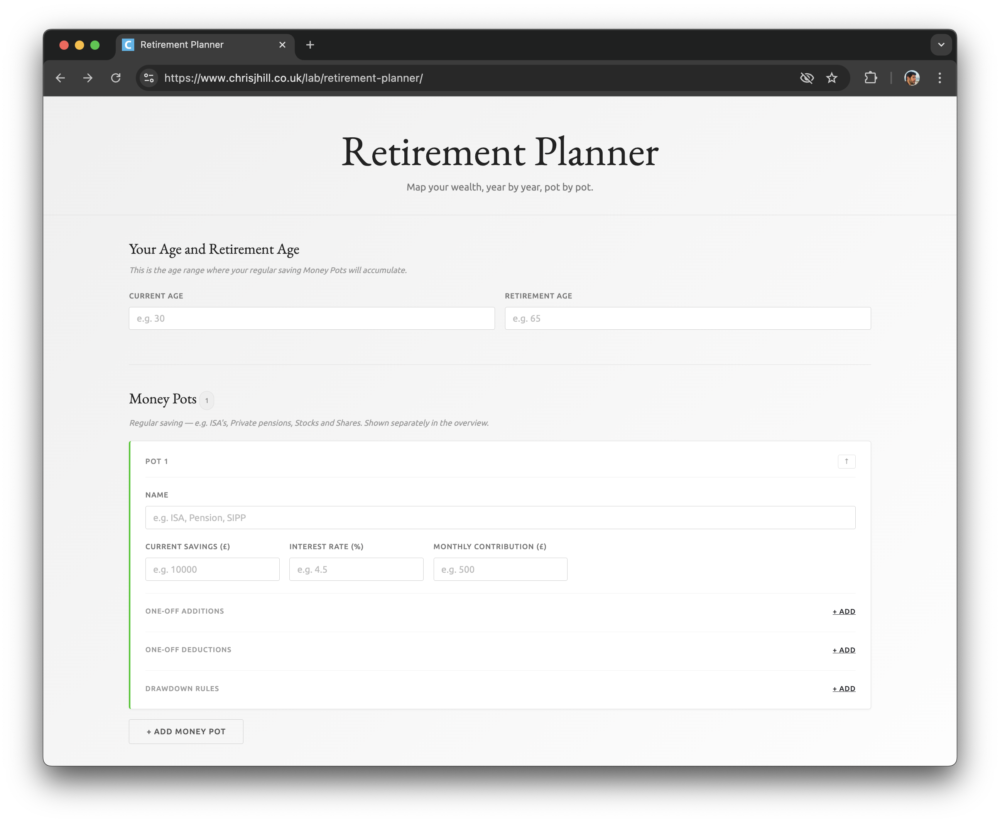

Retirement planning is deceptively complex. On the surface, it sounds simple: save money, invest it, and eventually live off it. But once you start digging into the details, growth rates, contribution levels, withdrawal strategies. It quickly becomes hard to reason about.
I ran into this problem myself. Spreadsheets helped, but they were rigid and difficult to experiment with. I wanted something more interactive, something that would let me explore “what if” scenarios quickly and intuitively.
So I built a small web application to do exactly that.
The app allows you to model your financial journey from today through retirement. You can enter your current savings, how much you contribute regularly, your expected rate of return, and when you plan to retire. From there, it projects how your savings might grow over time and estimates how much income you could draw each year once you stop working.
One of the main goals was flexibility. You can easily tweak assumptions and instantly see the impact. What happens if you retire five years earlier? What if returns are lower than expected? How much difference does increasing your monthly savings actually make?
These are the kinds of questions that are hard to answer statically, but much easier when you can interact with a model.
This started as a personal tool, but I realized others might find it useful too, especially if you prefer simple, transparent tools over complex financial software.
Try out the Retirement Planner →
For those that are interested: This is written in Vue.js, using version 3's Composition API.
Note: This is a rough planning tool, not financial advice. Real life is messier than any model. Use this as a guide, not a decision-maker.
